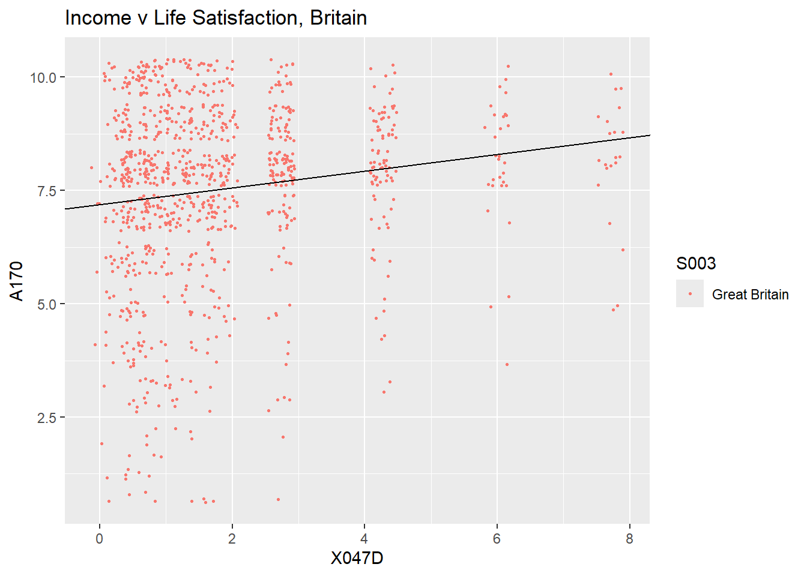

Introduction to Regression
Introduction
Here you will learn to
- create summary tables using the
group_by,summariseandspreadcommands - create scatter plots using
ggplotandgeom_point - run simple regression models using
lm - apply heteroskedastic robust inference on regression coefficients
- display regression results
Preparing your workfile
We add the basic libraries needed for this week’s work:
library(tidyverse) # for almost all data handling tasks
library(readxl) # to import Excel data
library(ggplot2) # to produce nice graphics
library(AER) # to calculate robust regression standard errors
library(stargazer) # to produce nice results tablesWe will also use one function saved in a .r file. The function in this file will be explained below. This file is available for download from here: stargazer_HC.R. When you get to that page you will see a download button.

You should save this files into your working directory. You can then this functions available to your code using this line.
source("stargazer_HC.r") # includes the robust regression displayData Context
The example we are using here is taken from the CORE - Doing Economics resource. In particular we are using Project 8 which deals with international data on well-being. The data represent several waves of data from the European Value Study (EVS). A wave means that the same survey is repeated at regular intervals (waves).
Importing Data
The data have been prepared as demonstrated in the Doing Economics Project 8, up to and including Walk-Through 8.3. Please have a look at this to understand the amount of data work required before an empirical analysis can begin. The datafile is saved as an R data structure (WBdata.Rdata). Download the file and ensure that it is in your working directory.
load("WBdata.Rdata")
str(wb_data) # prints some basic info on variables## tibble [129,515 × 19] (S3: tbl_df/tbl/data.frame)
## $ S002EVS : chr [1:129515] "1981-1984" "1981-1984" "1981-1984" "1981-1984" ...
## $ S003 : chr [1:129515] "Belgium" "Belgium" "Belgium" "Belgium" ...
## $ S006 : num [1:129515] 1001 1002 1003 1004 1005 ...
## $ A009 : num [1:129515] 3 5 2 5 5 5 5 5 4 4 ...
## $ A170 : num [1:129515] 9 9 3 9 9 9 9 10 8 10 ...
## $ C036 : num [1:129515] NA NA NA NA NA NA NA NA NA NA ...
## $ C037 : num [1:129515] NA NA NA NA NA NA NA NA NA NA ...
## $ C038 : num [1:129515] NA NA NA NA NA NA NA NA NA NA ...
## $ C039 : num [1:129515] NA NA NA NA NA NA NA NA NA NA ...
## $ C041 : num [1:129515] NA NA NA NA NA NA NA NA NA NA ...
## $ X001 : chr [1:129515] "Male" "Male" "Male" "Female" ...
## $ X003 : num [1:129515] 53 30 61 60 60 19 38 39 44 76 ...
## $ X007 : chr [1:129515] "Single/Never married" "Married" "Separated" "Married" ...
## $ X011_01 : num [1:129515] NA NA NA NA NA NA NA NA NA NA ...
## $ X025A : chr [1:129515] NA NA NA NA ...
## $ Education_1: num [1:129515] NA NA NA NA NA NA NA NA NA NA ...
## $ Education_2: chr [1:129515] NA NA NA NA ...
## $ X028 : chr [1:129515] "Full time" "Full time" "Unemployed" "Housewife" ...
## $ X047D : num [1:129515] NA NA NA NA NA NA NA NA NA NA ...You can create
.RDataobjects by saving your Environment. In this case all the objects in your environment will be saved and you can re-upload them as above using the load function.
Checking your environment you will see two objects. Along the proper
datafile (wb_data) you will find wb_data_Des
which contains some information for each of the variables. It will help
us to navigate the obscure variable names.
wb_data_Des## Names Labels
## 1 S002EVS EVS-wave
## 2 S003 Country/region
## 3 S006 Respondent number
## 4 A009 Health
## 5 A170 Life satisfaction
## 6 C036 Work Q1
## 7 C037 Work Q2
## 8 C038 Work Q3
## 9 C039 Work Q4
## 10 C041 Work Q5
## 11 X001 Sex
## 12 X003 Age
## 13 X007 Marital status
## 14 X011_01 Number of children
## 15 X025A Education
## 16 Education_1 Education category
## 17 Education_2 Education Description
## 18 X028 Employment
## 19 X047D Monthly household income
## Description
## 1 EVS-wave
## 2 Country/region
## 3 Original respondent number
## 4 State of health (subjective), 1 = Very Poor, 5 = Very good
## 5 Satisfaction with your life
## 6 To develop talents you need to have a job, 1 = Strongly Agree, 5 = Strongly Disagree
## 7 Humiliating to receive money without having to work for it, 1 = Strongly Agree, 5 = Strongly Disagree
## 8 People who don't work become lazy, 1 = Strongly Agree, 5 = Strongly Disagree
## 9 Work is a duty towards society, 1 = Strongly Agree, 5 = Strongly Disagree
## 10 Work should come first even if it means less spare time, 1 = Strongly Agree, 5 = Strongly Disagree
## 11 Sex
## 12 Age
## 13 Marital status
## 14 How many children you have-deceased children not included
## 15 Educational level respondent: ISCED-code one digit
## 16 Educational ISCED-code one digit
## 17 Education level description
## 18 Employment status
## 19 Monthly household income (? 1,000), corrected for ppp in eurosAs you can see there are a number of interesting questions in this dataset. These questions will allow us to investigate whether attitudes to work differ between coountries and whether such differences correlate to different levels of self-reported happiness/life satisfaction.
Details on the variables are avialable from here (chose EVS Longitudinal Data Files 1981-2008).
Initial data analysis and summary statistics
It is important that you, before you embark on any regression analysis, understand your data. Let us investigate some of the features of this dataset. It has 129515 observations and 19 variables. Let’s see which countries are represented in our dataset.
unique(wb_data$S003) # unque finds all the different values in a variable## [1] "Belgium" "Canada" "Denmark"
## [4] "France" "Germany" "Iceland"
## [7] "Ireland" "Italy" "Malta"
## [10] "Netherlands" "Norway" "Spain"
## [13] "Sweden" "Great Britain" "United States"
## [16] "Northern Ireland" "Austria" "Bulgaria"
## [19] "Czech Republic" "Estonia" "Finland"
## [22] "Hungary" "Latvia" "Lithuania"
## [25] "Poland" "Portugal" "Romania"
## [28] "Slovakia" "Slovenia" "Croatia"
## [31] "Greece" "Russian Federation" "Turkey"
## [34] "Albania" "Armenia" "Bosnia Herzegovina"
## [37] "Belarus" "Cyprus" "Northern Cyprus"
## [40] "Georgia" "Luxembourg" "Moldova"
## [43] "Montenegro" "Serbia" "Switzerland"
## [46] "Ukraine" "Macedonia" "Kosovo"As you can see these are 48 countries, almost all European, Canada and the U.S. being the exceptions. In the same manner we can find out how many waves of data we have available.
unique(wb_data$S002EVS)## [1] "1981-1984" "1990-1993" "1999-2001" "2008-2010"Let’s find out how many observations/respondents we have for each
country in each year. To do this we will resort to the powerful piping
technique delivered through the functionality of the
tidyverse (check out this page
in case you are not familiar with that technique):
table1 <- wb_data %>% group_by(S002EVS,S003) %>% # groups by Wave and Country
summarise(n = n()) %>% # summarises each group by calculating obs
spread(S002EVS,n) %>% # put Waves across columns
print(n=Inf) # n = Inf makes sure that all rows are printed## # A tibble: 48 × 5
## S003 `1981-1984` `1990-1993` `1999-2001` `2008-2010`
## <chr> <int> <int> <int> <int>
## 1 Albania NA NA NA 1200
## 2 Armenia NA NA NA 1224
## 3 Austria NA 1432 NA 1216
## 4 Belarus NA NA NA 1237
## 5 Belgium 1025 2721 1402 1343
## 6 Bosnia Herzegovina NA NA NA 1104
## 7 Bulgaria NA 984 858 1183
## 8 Canada 1241 1717 NA NA
## 9 Croatia NA NA 849 1188
## 10 Cyprus NA NA NA 775
## 11 Czech Republic NA 2076 1637 1308
## 12 Denmark 1163 1020 854 1061
## 13 Estonia NA 982 767 1273
## 14 Finland NA 544 NA 940
## 15 France 1187 981 1233 1341
## 16 Georgia NA NA NA 1233
## 17 Germany 1273 3391 1432 1683
## 18 Great Britain 1153 1459 NA 997
## 19 Greece NA NA 885 1246
## 20 Hungary NA 990 NA 1248
## 21 Iceland 907 690 853 666
## 22 Ireland 1197 997 782 504
## 23 Italy 1329 1970 1422 876
## 24 Kosovo NA NA NA 1339
## 25 Latvia NA 777 840 1197
## 26 Lithuania NA 975 731 1143
## 27 Luxembourg NA NA NA 1165
## 28 Macedonia NA NA NA 1290
## 29 Malta 424 NA 698 730
## 30 Moldova NA NA NA 1174
## 31 Montenegro NA NA NA 1166
## 32 Netherlands 1090 996 923 1250
## 33 Northern Cyprus NA NA NA 404
## 34 Northern Ireland 311 304 625 309
## 35 Norway 1031 1205 NA 992
## 36 Poland NA 958 NA 1050
## 37 Portugal NA 1171 635 764
## 38 Romania NA 1091 NA 1025
## 39 Russian Federation NA NA 2074 1102
## 40 Serbia NA NA NA 1216
## 41 Slovakia NA 1081 1147 1042
## 42 Slovenia NA 1011 627 801
## 43 Spain 2287 2619 741 908
## 44 Sweden 905 944 931 788
## 45 Switzerland NA NA NA 934
## 46 Turkey NA NA 1143 2010
## 47 Ukraine NA NA NA 1178
## 48 United States 2253 1741 NA NAYou can see that the number of countries have increased through time, although Canada and the U.S. have dropped out.
If you look at the dataframe itself (either
view(wb_data) or double click on the little spreadsheet
icon on the right hand edge of the Environment window) you will
recognise that there are a lot of missing observations (codes as
NA). Ordinarily we would be interested in finding out how
many effective observations we have for the life satisfaction variable
(A170). However, the initial datawork in https://www.core-econ.org/doing-economics/book/text/08-03.html#part-81-cleaning-and-summarizing-the-data,
has made sure that all the observations you can see are those with
available data for this variable.
Let’s look at a couple of graphical representations of our data (Look at this page for an introduction to basic graphing techniques). For instance we may be interested in figuring out whether life satisfaction (1 (dissatisfied) to 10 (satisfied)) and self-reported health are related to each other. We shall look at this on the basis of data aggregated for country-waves.
table2 <- wb_data %>% group_by(S002EVS,S003) %>% # groups by Wave and Country
summarise(Avg_LifeSatis = mean(A170),Avg_Health = mean(A009)) # summarises each group by calculating obs
ggplot(table2,aes(Avg_Health,Avg_LifeSatis, colour=S002EVS)) +
geom_point() +
labs(title ="Health v Life Satisfaction",
x = "Avg Health (1 = Very Poor, 5 = Very good)",
y = "Avg Life Satisfaction (1 = dissatisfied, 10 = satisfied)")We can see a clear positive relation between the two variables.
Let’s see whether we can see a similarly clear relationship between
life satisfaction and respondent’s attitude towards work
(C041 - “Work should come first even if it means less spare
time, 1 = Strongly Agree, 5 = Strongly Disagree”). What would you expect
to see?
table2 <- wb_data %>% group_by(S002EVS,S003) %>% # groups by Wave and Country
summarise(Avg_LifeSatis = mean(A170),Avg_WorkFirst = mean(C041)) # summarises each group by calculating obs
ggplot(table2,aes(Avg_WorkFirst, Avg_LifeSatis,colour=S002EVS)) +
geom_point() +
labs(title ="Work First v Life Satisfaction",
x = "Work First (1 = Strongly Agree, 5 = Strongly Disagree)",
y = "Avg Life Satisfaction (1 = dissatisfied, 10 = satisfied)")The relationship is less clear. Recall that small values for the “Work First” questions relate to the countries where, on average, respondents agreed more strongly with the statement that work should come first!
The correlation between the two variables is not very clear when looking at it at a country level. Let us continue whether the correlation between these two countries in a country is more clear (i.e., do people in, say, Spain, tend to indicate that they are more satisfied with life if they are more inclined to think that work is more important? If so we should expect a negative correlation in Spain).
We can calculate country wide correlations after grouping the data by country and then applying the summarise command to calculate correlations in a country. We restrict the analysis to the 2008-2010 wave.
table3 <- wb_data %>% filter(S002EVS == "2008-2010") %>%
group_by(S003) %>% # groups by Country
summarise(cor_LS_WF = cor(A170,C041,use = "pairwise.complete.obs"),
med_income = median(X047D)) %>% # correlation, remove missing data
arrange(cor_LS_WF)
ggplot(table3,aes( med_income,cor_LS_WF)) +
geom_point() +
ggtitle("Corr(Life Satisfaction, Work First) v Median Income")
There isn’t any really obvious relation between these correlations and the median income. Also the correlations are fairly close to 0 in all countries.
Regression Analysis
Regression analysis is a crucial tool in any data analyst’s toolbox. In the first instance regression analysis is tool of descriptive analysis, just like calculating sample means and correlations.
Often regression analysis is seen as some magic tool to discover causal relationships, but it is certainly not. Having said that, a good causal analysis will often use regresison analysis, but this is not the place to discuss when regression results can be interpreted causally.
In order to introduce how regressions are implemented in R we start by creating a new dataset which only contains the British data of the 2008-10 wave.
test_data <- wb_data %>%
filter(S003 =="Great Britain") %>% # pick British data
filter(S002EVS == "2008-2010") # pick latest waveNow we run a regression of the Life Satisfaction variable
(A170) against a constant only.
\(LifeSatis_{i} = \alpha + u_{i}\)
To implement a regression we ise the lm function
(lm for linear model). In the function call we need to tell
R which data object to use (data=test_data) and what model
to estimate. TO the left of the ~ symbol we state the
dependent variable (here life satisfaction or the A170
variable). To the right of the ~ symbol we list the
explanatory variables. Here we only have a constant (or a variable which
only takes the value 1 and hence, the model here is specified as
A170~1). The results of the regression are saved in a new
object which, here, we call mod1.
mod1 <- lm(A170~1,data=test_data)After executing this line you will see a new object mod1
in your environment. This object is a list will 11 objects. With
names(mod1) you can find out what elements are saved in
that list. You can use particular elements of this object, e.g. the
residuals, by calling mod1$residuals.
If you want a standard regression output you can obtain this as follows:
summary(mod1)##
## Call:
## lm(formula = A170 ~ 1, data = test_data)
##
## Residuals:
## Min 1Q Median 3Q Max
## -6.53 -0.53 0.47 1.47 2.47
##
## Coefficients:
## Estimate Std. Error t value Pr(>|t|)
## (Intercept) 7.5296 0.0634 119 <2e-16 ***
## ---
## Signif. codes: 0 '***' 0.001 '**' 0.01 '*' 0.05 '.' 0.1 ' ' 1
##
## Residual standard error: 2 on 996 degrees of freedomIn fact, this is not very nice and a better way to display regression
results is to use the stargazer function.
stargazer(mod1, type="text")##
## ===============================================
## Dependent variable:
## ---------------------------
## A170
## -----------------------------------------------
## Constant 7.500***
## (0.063)
##
## -----------------------------------------------
## Observations 997
## R2 0.000
## Adjusted R2 0.000
## Residual Std. Error 2.000 (df = 996)
## ===============================================
## Note: *p<0.1; **p<0.05; ***p<0.01This looks more like a standard regresison output. Check out
?stargazer to find out what the type option does.
What we will find is that the estimated value for \(\alpha\), \(\widehat{\alpha}=7.530\) is nothing else but the sample mean of all British observations in the 2008-2010 wave.
mean(test_data$A170)## [1] 7.5We could now calculate a t-test \(=(\widehat{\alpha}-\alpha_0)/se{\widehat{\alpha}}\) \(=(7.530-0)/0.063=119.524\) which tests the hypothesis that the average response to the Life Satisfaction question is equal to 0 (Yes, this makes no sense as the smallest possible response is 1, but R doesn’t know that!).
This could also be calculated without a regression model using the
t.test function:
t.test(test_data$A170, mu=0) # testing that mu = 0##
## One Sample t-test
##
## data: test_data$A170
## t = 119, df = 996, p-value <2e-16
## alternative hypothesis: true mean is not equal to 0
## 95 percent confidence interval:
## 7.4 7.7
## sample estimates:
## mean of x
## 7.5The differences in the t-tests are rounding differences.
Let’s see how we could use a regression to test for the difference in
means. First we adjust our dataset test_data to include
British and Swedish data. Note here how we use the increadibly useful
S003 %in% c("Sweden","Great Britain") condition which
selects all observations for which the country variable
(S003) is included in the list
c("Sweden","Great Britain"). Type ?c in the
console to see what the c() function does.
test_data <- wb_data %>%
filter(S003 %in% c("Sweden","Great Britain")) %>% # pick British and Swedish data
filter(S002EVS == "2008-2010") # pick latest waveThen we run a regression with the Life Expectancy as the dependent
variable and a constant and a dummy variable which takes the value 1 if
the respondent is from Sweden and 0 if the respondent is from Britain.
This is achieved by specifying the model as A170~S003. The
variable name before the ~ is the dependent variable, here
A170. The variable after the ~ is the
explanatory variable, here S003. (Note that R automatically
includes a constant into the regression model, even if you do not
specify it explicitly.)
mod1 <- lm(A170~S003,data=test_data)
stargazer(mod1, type="text")##
## ===============================================
## Dependent variable:
## ---------------------------
## A170
## -----------------------------------------------
## S003Sweden 0.150
## (0.097)
##
## Constant 7.500***
## (0.064)
##
## -----------------------------------------------
## Observations 1,785
## R2 0.001
## Adjusted R2 0.001
## Residual Std. Error 2.000 (df = 1783)
## F Statistic 2.400 (df = 1; 1783)
## ===============================================
## Note: *p<0.1; **p<0.05; ***p<0.01This regression is a very special one as it uses the country variable
as the explanatory variable. Recall that test_data only
contain British and Swedish data. The regression picked one country as
the base country (here Britain as it is first in the alphabet) and for
the other it created a dummy variable. Basically a variable (\(Sweden_i\)) which takes the value 1 if the
observation comes from Sweden and 0 otherwise.
\(LifeSatis_{i} = \alpha + \beta~ Sweden_{i} + u_{i}\)
You can see that the constant (\(\widehat{\alpha}\)) still reports the sample average for the British observations. It is identical to the value we saw in the previous regression. But what is the meaning of \(\widehat{\beta}=0.149\)? This is not the average response value for Swedish respondents, but the difference between the British and Swedish average. As it is positive it means that the Swedish average response is larger than the British. In fact it is 7.530+0.149=7.679.
Let’s confirm this by briefly calculating the the two means in the usual manner
test_data %>% group_by(S003) %>% summarise(mean = mean(A170))## # A tibble: 2 × 2
## S003 mean
## <chr> <dbl>
## 1 Great Britain 7.53
## 2 Sweden 7.68You can now test whether that difference is significantly different from 0 (\(H_0:\beta = 0\)) which is equivalent to testing that the two averages are identical. The t-test for this hypothesis test would be \(0.149/0.097=1.536\).
The regressions we ran so far were special in the sense that they involved explanatory variables which were either a constant (i.e. ones) or dummy variables (0s or 1s). The result of this was that the resulting estimates represented sample means or differences in sample means.
The interpretation of coefficient estimates changes as explanatory variables take a more general form.
test_data <- wb_data %>%
filter(S003 =="Great Britain") %>% # pick British data
filter(S002EVS == "2008-2010") # pick latest waveWe now estimate a regression model which includes a constant and the
household’s monthly income (in 1,000 Euros) as an explanatory variable
(\(INC_i\) OR VARIABLE
x047D in our dataset).
\(LifeSatis_{i} = \alpha + \beta~ Inc_{i} + u_{i}\)
mod1 <- lm(A170~X047D,data=test_data)
stargazer(mod1, type="text")##
## ===============================================
## Dependent variable:
## ---------------------------
## A170
## -----------------------------------------------
## X047D 0.180***
## (0.039)
##
## Constant 7.200***
## (0.095)
##
## -----------------------------------------------
## Observations 997
## R2 0.022
## Adjusted R2 0.021
## Residual Std. Error 2.000 (df = 995)
## F Statistic 22.000*** (df = 1; 995)
## ===============================================
## Note: *p<0.1; **p<0.05; ***p<0.01Here you see that \(\widehat{\beta}=0.184\). What does this
mean? As the income increases by one unit (here that represents an
increase of Euro 1,000) we should expect that Life Satisfaction
increases by 0.184 units. What is the interpretation for \(\widehat{\alpha}=7.190\)? For someone with
0 income we should expect the Life Satisfaction to be 7.119. Let’s
present a graphical representation, including a representation of the
estimated regression line
(+ geom_abline(intercept = mod1$coefficients[1], slope = mod1$coefficients[2])).
ggplot(test_data, aes(x=X047D, y=A170, colour = S003)) +
geom_point() +
geom_abline(intercept = mod1$coefficients[1], slope = mod1$coefficients[2]) +
ggtitle("Income v Life Satisfaction, Britain")This plot is somewhat awkward as each of the points you see may
represent many observations as incomes are only reported in 12 different
values. R has a neat option for cases like this. Instead of using
geom_point you can use geom_jitter whcih
raandomises the location of teh points a little such that you can see
the individual points.
ggplot(test_data, aes(x=X047D, y=A170, colour = S003)) +
geom_jitter(width=0.2, size = 0.5) + # Use jitter rather than point so we can see indiv obs
geom_abline(intercept = mod1$coefficients[1], slope = mod1$coefficients[2])+
ggtitle("Income v Life Satisfaction, Britain")
The regression parameters, which deliver the line of best fit, are estimated by Ordinary Least Squares (OLS). The name comes from the fact that these parameters are the ones which minimise the sum of squared residuals, \(\Sigma \widehat{u}^2_i = \Sigma (LifeSatis_{i} - \widehat{\alpha} - \widehat{\beta}~ Inc_{i})^2\). These parameters achieve another thing, they ensure that \(Corr(Inc_{i},\widehat{u}_{i})=0\) is true.
This last point is incredibly important, as one of the assumptions underpinning the estimation of regression models by OLS is that \(Corr(Inc_{i},u_{i})=0\), called the exogeneity assumption. Why is that assumption important? If the assumption was not true, then we need to accept that the OLS estimation imposes a feature into the model that is not appropriate for the data. As a result the resulting regression coefficients are biased. As a consequence the resulting regression model cannot be said to have any causal interpretation.
As we cannot observe \(u_i\), the assumption of exogeneity cannot be tested directly and we need to make an argument using economic understanding.
A lot of econometric work is therefore directed at building either models or estimation methods (alternatives to OLS) which make this assumption more defendable. This could be the inclusion of additional explanatory variables (leading to multivariate regression analysis) or the application of alternative estimation methods (like instrumental variables estimation).
Multiple Regression
In the earlier model we reelated life satisfaction to income. There
is of course no suggestion that life satisfaction should only be related
to income. It is clear that other variables should also be related, such
as health (variable A009).
Let’s add this health variable as well as a dummy variable indicating whether a respondent is a male of female (a variable taken 0 if female or 1 if male) to the regression to estimate this model:
\[LifeSatis_{i} = \alpha + \beta~ Inc_{i} + \gamma~Health_{i} + \delta~Sex_{i}+ u_{i}\]
mod2 <- lm(A170~X047D+A009+X001 ,data=test_data)
stargazer(mod1, mod2, type="text")##
## ===================================================================
## Dependent variable:
## -----------------------------------------------
## A170
## (1) (2)
## -------------------------------------------------------------------
## X047D 0.180*** 0.120***
## (0.039) (0.039)
##
## A009 0.500***
## (0.064)
##
## X001Male -0.240*
## (0.120)
##
## Constant 7.200*** 5.400***
## (0.095) (0.260)
##
## -------------------------------------------------------------------
## Observations 997 997
## R2 0.022 0.084
## Adjusted R2 0.021 0.081
## Residual Std. Error 2.000 (df = 995) 1.900 (df = 993)
## F Statistic 22.000*** (df = 1; 995) 30.000*** (df = 3; 993)
## ===================================================================
## Note: *p<0.1; **p<0.05; ***p<0.01You can see that the effect of income (X047D) has
reduced somewhat with this inclusion of extra covariates. You can see
that being a male is associated with a somewhat lower life satisfaction.
The health variable, coded as (1 = very poor and 5 = very good), seems
to be positively correlated with life satisfation (coded from 1 to 10).
This is of course not a surprise as bad health is bound to impact
negatively on life satisfaction.
If you check the data format for the Health variable it is a numeric data format. This means that the way in which the parameter is interpreted it implies that (on average) an increase of 1 on the health score should be expected to relate to an increase of the life satisfaction score of about 0.5. This interpretation implies that increasing your health from a score of 1 to 2 has the same effect on life satisfaction as an increase from 3 to 4. This may not be the case.
In order to allow for a nonlinear relationship between health and
life satisfaction it will be instructive to not treat the health
variable as a numeric variable, but rather as a categorical one. This is
achieved by turning A009 into a factor variable
(as.factor(A009)). Let’s look at the outcome.
mod3 <- lm(A170~X047D+as.factor(A009)+X001 ,data=test_data)
stargazer(mod1, mod2, mod3, type="text")##
## ===========================================================================================
## Dependent variable:
## -----------------------------------------------------------------------
## A170
## (1) (2) (3)
## -------------------------------------------------------------------------------------------
## X047D 0.180*** 0.120*** 0.120***
## (0.039) (0.039) (0.039)
##
## A009 0.500***
## (0.064)
##
## as.factor(A009)2 0.680
## (0.470)
##
## as.factor(A009)3 1.500***
## (0.430)
##
## as.factor(A009)4 1.800***
## (0.420)
##
## as.factor(A009)5 2.300***
## (0.430)
##
## X001Male -0.240* -0.240*
## (0.120) (0.120)
##
## Constant 7.200*** 5.400*** 5.600***
## (0.095) (0.260) (0.410)
##
## -------------------------------------------------------------------------------------------
## Observations 997 997 997
## R2 0.022 0.084 0.086
## Adjusted R2 0.021 0.081 0.081
## Residual Std. Error 2.000 (df = 995) 1.900 (df = 993) 1.900 (df = 990)
## F Statistic 22.000*** (df = 1; 995) 30.000*** (df = 3; 993) 16.000*** (df = 6; 990)
## ===========================================================================================
## Note: *p<0.1; **p<0.05; ***p<0.01What R has done here is the following: There are five possible values
for the health variable. The first (A009=1) is used as the
default. Then there are four extra dummy variables included. For
instance a dummy variable which takes a value 1 if A009=3
(and equally for outcomes 2, 4 and 5). For nstance the estimated
coefficient of 1.515 for the outcome 3 indicates that relative to the
default answer (A009=1) we should expect the answer to the
Life Satifaction answer to be 1.515 larger if a respondent answered 3 to
the health question. Now you can see from the coefficients that
answering 4 instead of 3 makes actually very little difference to the
life satisfaction question.
Robust Regression Inference
This page is not a complete econometric discussion of regression analysis and its assumptions. One of the commonly made assumptions is that the variance of regression error terms is constant across all observations. This is called the homoskedasticity assumption. This is an assumption frequently breached, in which case we say that there is heteroskedasticity.
There are diagnostics test available to test the null hypothesis of
the absence of heteroskedasticity (e.g. the bptest function
of the AER package). However, here we concentrate on how to
deal with the presence of heteroskedasticity. The immediate consequence
is that the standard errors that are calculated by R, or most other
econometric packages, are incorrect. For all but very small sample sizes
there is a straightforward fix, heteroskedasticity robust standard
errors can be calculated.
This is not done by the lm function but by another
function, vcovHC provided by the AER package.
You can use the help function for vcovHC to see what
options you have and how to do this. However, the
stargazer_HC function which you loaded at the beginning of
this exercise does implement this in an easy to use manner. If you wish
to calculate heteroskedastic standard errors you can call
stargazer_HC instead of stargazer to display
the regression output.
stargazer_HC(mod1, type_out="text")##
## =========================================================
## Dependent variable:
## -------------------------------------
## A170
## ---------------------------------------------------------
## X047D 0.180***
## (0.034)
##
## Constant 7.200***
## (0.100)
##
## ---------------------------------------------------------
## Observations 997
## R2 0.022
## Adjusted R2 0.021
## Residual Std. Error 2.000 (df = 995)
## F Statistic 22.000*** (df = 1; 995)
## =========================================================
## Note: *p<0.1; **p<0.05; ***p<0.01
## Robust standard errors in parenthesisComparing the standard errors, the values in parenthesis underneath the coefficient estimates, you will see that the standard errors are somewhat different to the ones in the earlier regression output. The coefficients, however, remain unchanged.
Summary
You have learned how to use R to estimate a regression model and how to calculate heteroskedasticity robust standard errors.